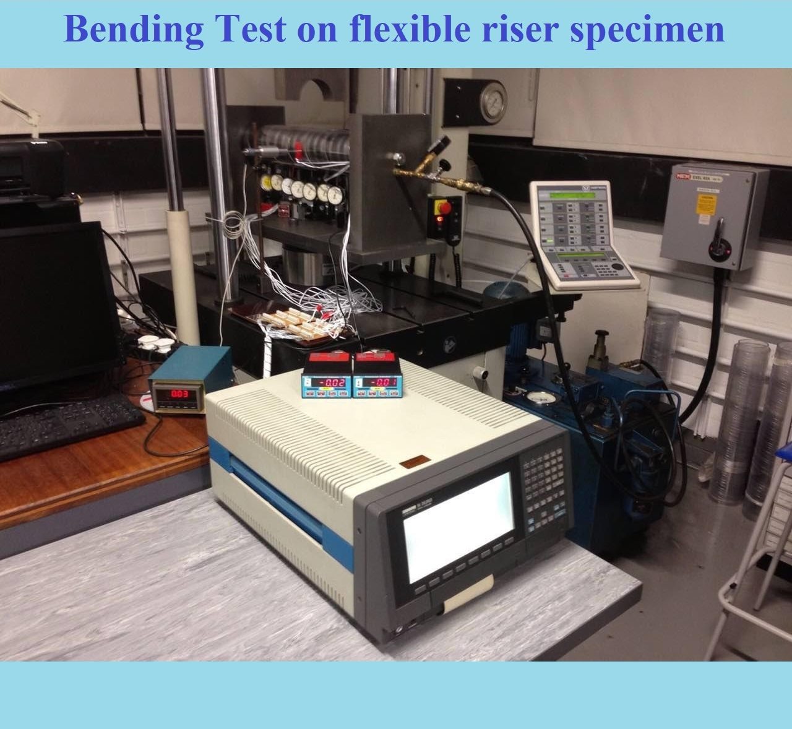
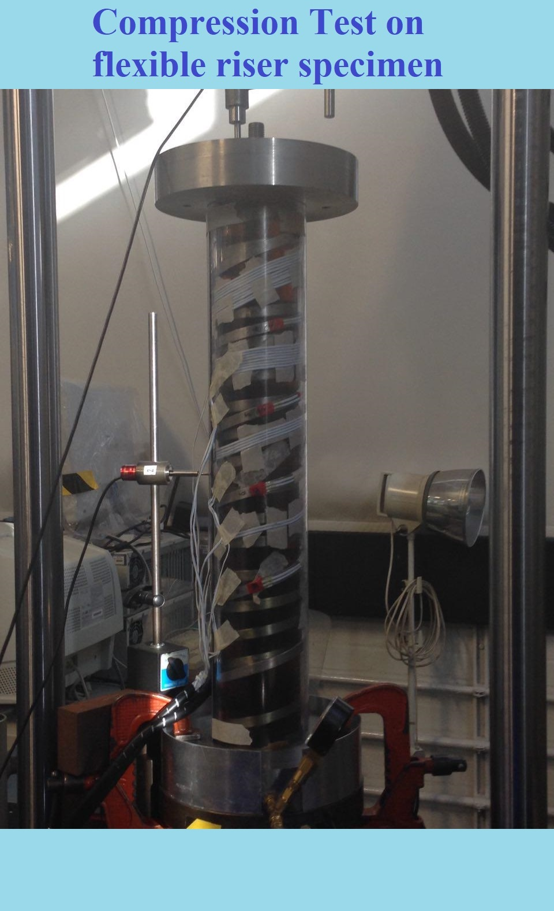
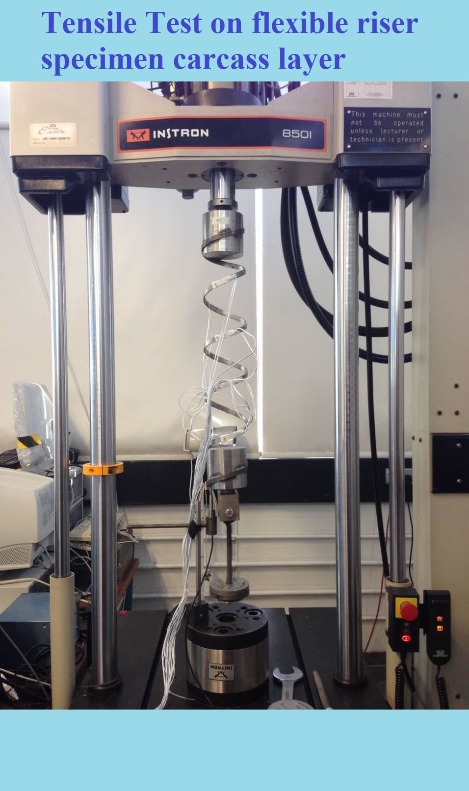

Boot Camp, Data Analytics | University of California, Irvine (In process: Feb 2019)
Master of Philosophy, Mechanical Engineering | Brunel University London (2014)
Master of Science, Mechanical Engineering | Brunel University London (2010)
Member | Institute of Mechanical Engineers (IMechE)
Member | Engineers without Borders (EWB)
UCI Data Analytics Boot Camp
The website you are watching at the moment is made based on the process of this course; it is expected the course to be finished on Feb 2019.
Brunel University London
I was studied in this university between years 2009 and 2014 and the results of the courses were incredible; in the following three slides some tests done in the second course have been demonstrated.

Bending Test
A fleixble riser specimen was designed, built, assembled, modelled in FEA and tested under bending condition in this test series. For more information please check the publication section.

Compression Test
The specimen fixtures were redesign and compressive force applied; similar explained tools from previous slide were used. For more information please check the publication section.

Tensile Test(Carcass Layer)
As one of the most crucial layers of the flexible risers, carcass specimen was analysed under static tensile test. This, can also be studeid on the paper illustrated in previous slide. For more information please check the publication section.
EWB
In order to help the society growth, I have joined the group since 2017.
IMechE
Joined the society since I was in my MSc course in academic year 2009/10.